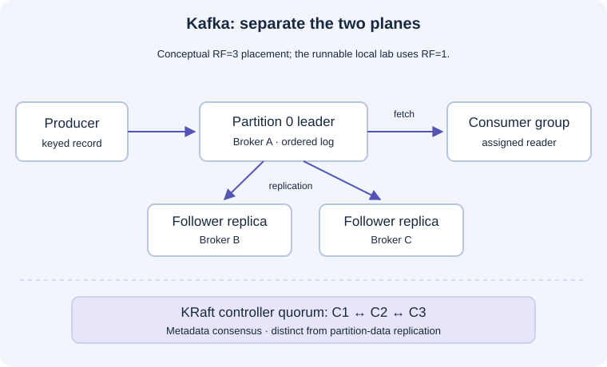

Kafka Architecture Explained: Partitions, Replicas and KRaft
Follow a record from producer to partition leader to consumer, then separate data replication from metadata consensus.

- Producer → partition leader → follower replicas
- Controller quorum → cluster metadata
- Consumer group → assigned partitions → committed offsets
The data path: topics, partitions, brokers
A topic names a stream; partitions divide its log into independent ordered sequences. Brokers store replicas of those partitions. The producer learns metadata, chooses a partition, and sends to its leader. Followers replicate the leader’s log. A replication factor of three means three replicas total, not three followers. Spread replicas across failure domains when the deployment supports rack awareness.
An offset is a position inside one topic partition. Offset 50 in partition 0 has no ordering relationship with offset 50 in partition 1. A stable non-null key normally routes related records to the same partition under the selected partitioner. It does not imply a key range, and changing the number of partitions can change the key-to-partition mapping. Plan that change if per-entity order matters.
Replication and acknowledgement are a joint policy
The in-sync replica set tracks replicas keeping up within configured limits. With acks=all, the leader waits for the required in-sync replication acknowledgement; min.insync.replicas determines when writes must be rejected because too few replicas remain. With RF=3 and minimum ISR=2, the cluster can usually continue after one replica loss, but placement and concurrent failures matter.
Acks=all with RF=1 still means one copy. It is useful in a local lab but gives no broker failure tolerance. Increasing replication consumes storage and network capacity. Avoid treating replica count alone as a durability proof: examine acknowledgement settings, unclean leader election policy, disk behavior, and disaster-recovery boundaries together.
Consumers, groups, and committed positions
Within a conventional consumer group, a partition is assigned to one active consumer at a time. Consumers in different groups can independently read the same records. Adding consumers beyond the partition count does not create more partition-level parallelism. A rebalance changes assignments; it is not evidence that records have disappeared.
The consumer’s current position and its committed offset are different. A commit records the next offset to read after recovery. If processing succeeds but the commit fails, work may repeat. If the commit succeeds before processing, work may be skipped after a crash. This is why offset management belongs next to sink-side correctness in the design.
Retention and compaction are different promises
Time- or size-based deletion bounds the retained log. A consumer offline longer than that window may lose the ability to recover from its committed offset. Compaction eventually removes superseded values for the same key; it does not immediately turn the log into one row per key. Tombstones represent deletions and have their own retention concerns.
Use deletion retention for a bounded event history and compaction for reconstructing keyed state when that model fits. Neither replaces a backup policy. Budget disk for replicas, segments awaiting cleanup, indexes, and operational headroom rather than assuming that a configured retention duration is an exact disk cap.
KRaft is the metadata plane
Modern Kafka uses a KRaft controller quorum to manage cluster metadata through a replicated metadata log. The active controller coordinates metadata changes; controller followers provide quorum continuity. Partition leaders handle data traffic and are conceptually separate from the active metadata controller. A healthy controller quorum does not prove that a particular data partition is healthy.
Kafka 4.x no longer uses ZooKeeper. Older deployments may still have ZooKeeper-based operational procedures, so do not copy their failure diagnosis into a KRaft runbook. A one-node combined broker/controller is appropriate for the lab. Production role separation and quorum membership depend on the Kafka version and availability requirements. During an incident, identify which plane is failing before restarting anything.
Source, versions, and further reading
Applied engineering case studies
Review the implementation, evidence, and documented limitations of these related portfolio projects.
Discuss the engineering decision
If the controller quorum is healthy but one partition cannot elect a leader, which evidence would you inspect next?